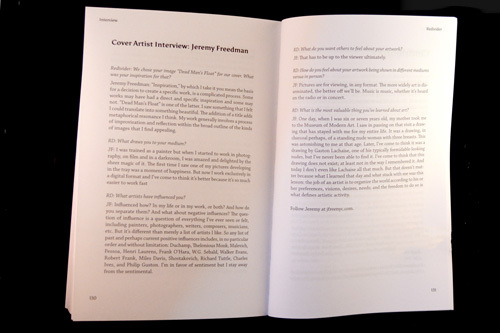

---
layout: default
title: Redivider, volume 11 issue 1
--- 		
<article>
	<div class="wrapper">
        <h1>Redivider 11.1 (2014 New England Book Show)</h1>
        <p><em>Redivider</em> is the literary journal run by grad students at Emerson College. Our redesign of issue 11.1 won a spot in the literary journal category of the 2014 New England Book Show. I designed the cover for this issue, chose the interior typefaces, and was responsible for layout.</p> 
        <div class="jcarousel-wrapper">
            <div class="jcarousel">
                <ul>
					<li></li>
					<li></li>
					<li></li>
					<li></li>
					<li></li>
					<li></li>
					<li></li>
                </ul>
            </div>

            <a href="#" class="jcarousel-control-prev">&lsaquo;</a>
            <a href="#" class="jcarousel-control-next">&rsaquo;</a>

            <p class="jcarousel-pagination"></p>
        </div>
    </div>		
			
	<div class="download"><a href="redivider-11.1/redivider11.1-spreads.pdf" target="_blank">Click to download a sample PDF</a></div>
</article>